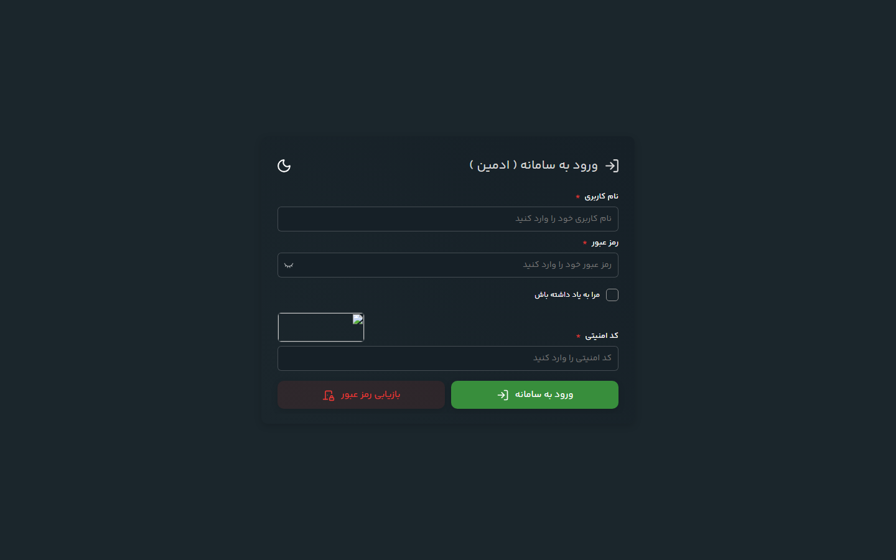

CRM ماژولار برای مدیریت تعمیرگاههای الکترونیک؛ از پذیرش و پیگیری تعمیرات تا فروش، انبار و مدیریت دسترسیها — با معماری ماژولار و رابط کاربری جداشده.

این سامانه با معماری ماژولار ساخته شده است تا هر بخش از کسبوکار تعمیرگاه بهصورت مستقل توسعه و نگهداری شود. فرانتاند از بکاند جدا شده و بکاند از طریق API با آن ارتباط میگیرد.
Admin، Auth، Captcha، Catalog، Customer، Dashboard، ManagePermission، RepairOrder و Salesاین پروژه بر معماری تمیز و تفکیک دغدغهها (Separation of Concerns) تمرکز دارد؛ ماژولار بودن آن اجازه میدهد سیستم بدون بازنویسی، برای کسبوکارهای مشابه گسترش پیدا کند.